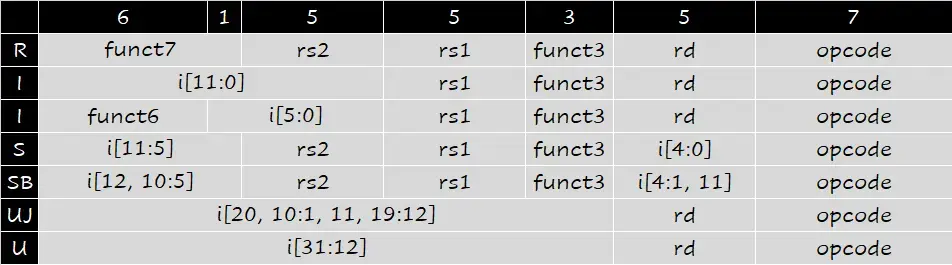
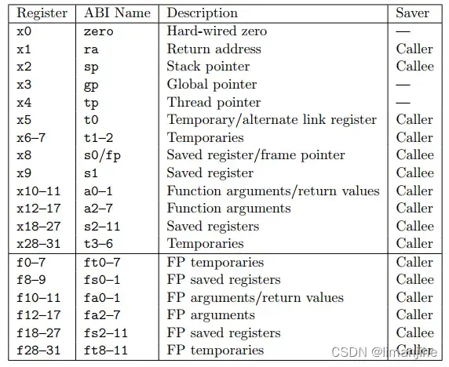

Final Cheatsheet
Note
- 并不是最终使用的版本
- 与其抄很多知识点，不如抄点例题！
1 Chapter 1#
1.1 performance#
- elapse time 总时间
- cpu time 除去 I/O 等其他因素的时间
- clock cycle time 时钟周期
- clock rate 时钟频率
- 同样的代码，如果 ISA 相同，则 #inst 相同
- power of cpu \(P=C\times V^2 \times F\)
- amdahl's law \(T_{\text{improved}}=\frac{T_{\text{affected}}}{\text{improvement factor}}+T_{\text{unaffected}}\)
- MIPS: 每秒钟百万指令数
1.2 great ideas#
- design for moore's law
- use abstraction to simplify design
- make the common case fast
- performance via parallelism
- performance via pipelining
- performance via prediction
- hierarchy of memories
- dependability via redundancy
2 Chapter 2 Instructions#
2.1 指令表#


这张图不用抄，如果考到了相关指令会给其作用的解释，但是可以记一下每一种指令是什么 type 或者记录一下简单的 opcode？
lr.d/lr.wload reservedlr.d rd, (rs1)- 从
(rs1)加载到rd - 并在硬件上保留一个
reservation标记
- 从
sc.d/sc.wstore conditionalsc.d rd, rs2, (rs1)- 检查
reservation标记是否有效，如果有效才将rs2的值写入(rs1)，并标记rd=0
- 检查
| atomic swap | |
|---|---|
| lock | |
|---|---|
2.1.1 加载 32-bit 立即数#
2.2 寄存器表#

ra在进入函数的第一步就要保护s类型寄存器使用前要保护
2.3 Memory layout#
简单记一下就行
- little endians: least significant digit 的地址小，例如
12345678h -> 78 56 34 12 - fp: 栈帧指针
- sp: 栈顶指针
3 Chapter 3 Arithmetics#
3.1 数制表示#
- unsigned
- signed
- sign-magnitude
- 2's complement
- 移码，例如加 bias = -128
3.2 Add, Sub#
- 减就是加上补码
- overflow
- 负数相加得到正数
- 正数相加得到负数
3.3 Mul#
3.4 Div#
3.5 Floating point#
- IEEE 754
sign | exp | frac- 32-bit:
sign 1 | exp 8 | frac 23 - 64-bit:
sign 1 | exp 11 | frac 52 - infinity:
exp = 111...1, frac = 000...0无穷也分正负 - nan:
exp = 111...1, frac != 000...0illegal or undefined result
- 32-bit:
- rounding
guard (frac[-1]) | round (frac[-2]) | sticky (frac[-3])- sticky 表示 round 后面是否还有 1，如果有 1 那么 sticky 就是 1
- round to nearest even 精度是 0.5ulp
4 Chapter 4 CPU#
4.1 Single cycle cpu#
题型
- 信号是什么
- datapath 流程/需要的 unit
- 实现一定的指令扩展，信号？datapath？
4.2 Pipelined cpu#
- 多/单周期流水线示意图样例
4.2.1 Data Hazard#
4.2.1.1 EX hazard#
4.2.1.2 Mem hazard load use#
4.2.1.3 Stall load use#
load use: stall + mem forwarding
4.2.2 Branch Hazard#
- branch 可以提前到 ID，但是至少仍然产生一个 bubble
- dynamic prediction: ½-bit predictor
- branch target buffer，执行到 branch 就根据预测结果跳到 target 执行，不用再计算 pc
4.2.3 Exceptions#
PC -> SPEC (Supervisor Exception Program Counter)ERROR CODE -> SCAUSE (Supervisor Exception Cause Register)- 跳转到 handler
if restartalbe: 修正错误，并返回到SPECelse终止，向操作系统上报错误
PC前面需要扩展一个MUX来进行选择
![[Textbook/Computer Organization and Design [RISC-V Edition].pdf#page=472&rect=138,132,494,449|Computer Organization and Design [RISC-V Edition], p.352]]
5 Memory Hierarchy#
- 金字塔
- disk access time 计算示例
- 几种表示例
- 几种 cache 结构示例
- direct mapped
- fully associative
- set asso
5.1 Write#
- write miss 如果目标不在内存里
- write around: 直接写到 mem
- write allocate: 先加载到 cache 再执行正常的写
- 正常的写操作 write strategy
- write through: 总是写入到 mem
- -> 问题：write stall -> 使用 write buffer 解决
- write back 需要
- write through: 总是写入到 mem
5.2 Perf#
- AMAT = hit time + miss time = hit time + miss rate * miss penalty
- CPU Time = CPU exe. clock cycles + mem-stall clock cycles
6 IO#
- throughput & response time
- (average) disk access time
- (average) seek time
- rotational latency 平均转半圈
- transfer time: 读取和传输一个 sector
- disk controller: 控制器延迟